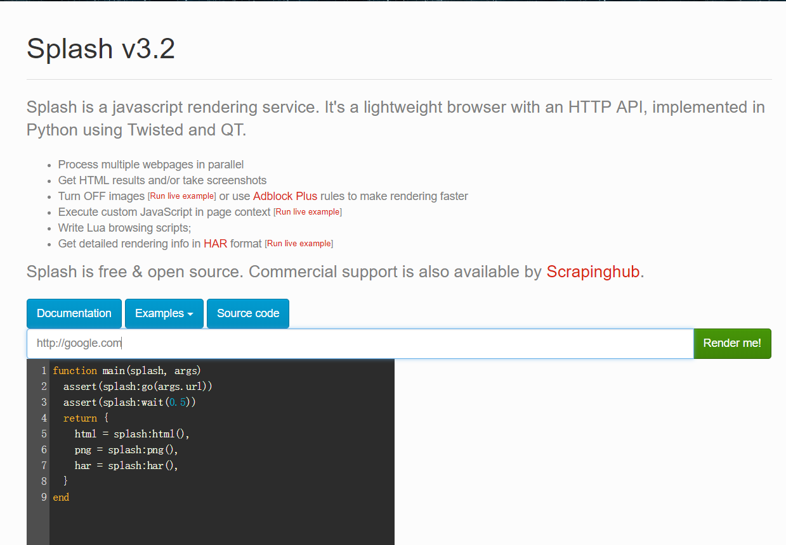
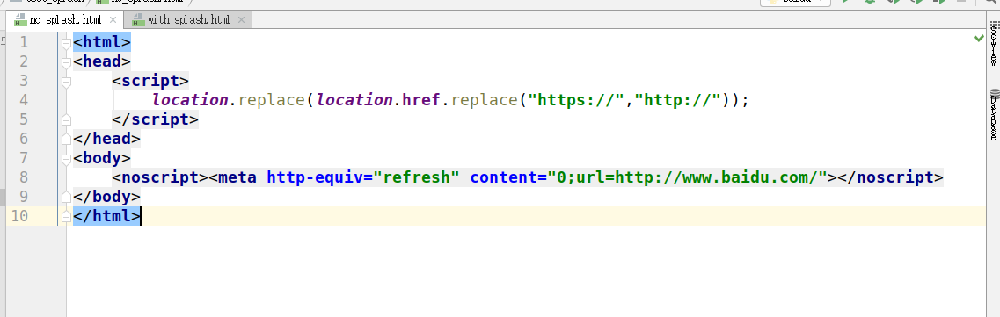
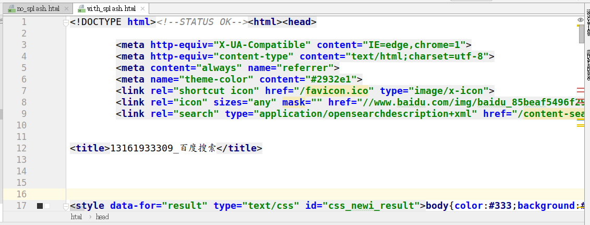

scrapy_splash组件的使用
学习目标
- 了解 scrapy_splash组件的作用
- 了解 scrapy_splash组件的使用
1. 什么是scrapy_splash？
scrapy_splash是scrapy的一个组件
- scrapy-splash加载js数据是基于Splash来实现的。
- Splash是一个Javascript渲染服务。它是一个实现了HTTP API的轻量级浏览器，Splash是用Python和Lua语言实现的，基于Twisted和QT等模块构建。
- 使用scrapy-splash最终拿到的response相当于是在浏览器全部渲染完成以后的网页源代码。
splash官方文档 https://splash.readthedocs.io/en/stable/
2. scrapy_splash的作用
scrapy-splash能够模拟浏览器加载js，并返回js运行后的数据
3. scrapy_splash的环境安装
3.1 使用splash的docker镜像
splash的dockerfile https://github.com/scrapinghub/splash/blob/master/Dockerfile
观察发现splash依赖环境略微复杂，所以我们可以直接使用splash的docker镜像
如果不使用docker镜像请参考 splash官方文档 安装相应的依赖环境
3.1.1 安装并启动docker服务
3.1.2 获取splash的镜像
在正确安装docker的基础上pull取splash的镜像
sudo docker pull scrapinghub/splash
3.1.3 验证是否安装成功
运行splash的docker服务，并通过浏览器访问8050端口验证安装是否成功
前台运行
sudo docker run -p 8050:8050 scrapinghub/splash后台运行
sudo docker run -d -p 8050:8050 scrapinghub/splash
访问 http://127.0.0.1:8050 看到如下截图内容则表示成功

3.1.4 解决获取镜像超时:修改docker的镜像源
以ubuntu18.04为例
- 创建并编辑docker的配置文件
sudo vi /etc/docker/daemon.json
- 写入国内docker-cn.com的镜像地址配置后保存退出
{
"registry-mirrors": ["https://registry.docker-cn.com"]
}
重启电脑或docker服务后重新获取splash镜像
这时如果还慢，请使用手机热点（流量orz）
3.1.5 关闭splash服务
需要先关闭容器后，再删除容器
sudo docker ps -a
sudo docker stop CONTAINER_ID
sudo docker rm CONTAINER_ID
3.2 在python虚拟环境中安装scrapy-splash包
pip install scrapy-splash
4. 在scrapy中使用splash
以baidu为例
4.1 创建项目创建爬虫
scrapy startproject test_splash
cd test_splash
scrapy genspider no_splash baidu.com
scrapy genspider with_splash baidu.com
4.2 完善settings.py配置文件
在settings.py文件中添加splash的配置以及修改robots协议
# 渲染服务的url
SPLASH_URL = 'http://127.0.0.1:8050'
# 下载器中间件
DOWNLOADER_MIDDLEWARES = {
'scrapy_splash.SplashCookiesMiddleware': 723,
'scrapy_splash.SplashMiddleware': 725,
'scrapy.downloadermiddlewares.httpcompression.HttpCompressionMiddleware': 810,
}
# 去重过滤器
DUPEFILTER_CLASS = 'scrapy_splash.SplashAwareDupeFilter'
# 使用Splash的Http缓存
HTTPCACHE_STORAGE = 'scrapy_splash.SplashAwareFSCacheStorage'
# Obey robots.txt rules
ROBOTSTXT_OBEY = False
4.3 不使用splash
在spiders/no_splash.py中完善
import scrapy
class NoSplashSpider(scrapy.Spider):
name = 'no_splash'
allowed_domains = ['baidu.com']
start_urls = ['https://www.baidu.com/s?wd=13161933309']
def parse(self, response):
with open('no_splash.html', 'w') as f:
f.write(response.body.decode())
4.4 使用splash
import scrapy
from scrapy_splash import SplashRequest # 使用scrapy_splash包提供的request对象
class WithSplashSpider(scrapy.Spider):
name = 'with_splash'
allowed_domains = ['baidu.com']
start_urls = ['https://www.baidu.com/s?wd=13161933309']
def start_requests(self):
yield SplashRequest(self.start_urls[0],
callback=self.parse_splash,
args={'wait': 10}, # 最大超时时间，单位：秒
endpoint='render.html') # 使用splash服务的固定参数
def parse_splash(self, response):
with open('with_splash.html', 'w') as f:
f.write(response.body.decode())
4.5 分别运行俩个爬虫，并观察现象
4.5.1 分别运行俩个爬虫
scrapy crawl no_splash
scrapy crawl with_splash
4.5.2 观察获取的俩个html文件
不使用splash

使用splash

4.6 结论
- splash类似selenium，能够像浏览器一样访问请求对象中的url地址
- 能够按照该url对应的响应内容依次发送请求
- 并将多次请求对应的多次响应内容进行渲染
- 最终返回渲染后的response响应对象
5. 了解更多
关于splash https://www.cnblogs.com/zhangxinqi/p/9279014.html
关于scrapy_splash（截屏，get_cookies等） https://www.e-learn.cn/content/qita/800748
小结
- scrapy_splash组件的作用
- splash类似selenium，能够像浏览器一样访问请求对象中的url地址
- 能够按照该url对应的响应内容依次发送请求
- 并将多次请求对应的多次响应内容进行渲染
- 最终返回渲染后的response响应对象
- scrapy_splash组件的使用
- 需要splash服务作为支撑
- 构造的request对象变为splash.SplashRequest
- 以下载中间件的形式使用
- 需要scrapy_splash特定配置
scrapy_splash的特定配置
SPLASH_URL = 'http://127.0.0.1:8050' DOWNLOADER_MIDDLEWARES = { 'scrapy_splash.SplashCookiesMiddleware': 723, 'scrapy_splash.SplashMiddleware': 725, 'scrapy.downloadermiddlewares.httpcompression.HttpCompressionMiddleware': 810, } DUPEFILTER_CLASS = 'scrapy_splash.SplashAwareDupeFilter' HTTPCACHE_STORAGE = 'scrapy_splash.SplashAwareFSCacheStorage'